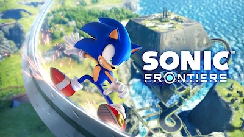

Since it's debut in 1991, Sonic has been a popular character in the gamesphere. Yet, that didn't stop Sega from fumbling the franchise throughout the years of it's existance.
After selling a total of 44 milliestion lifetime sales across multiple platforms, the sales have steadily declined to a point of confusion. What needs to be asked? "What's going on at Sega?", and "Is the Sonic series lucrative enough to continue pouring money into the franchise?" So many ideas were used to spark interest in later versions but nothing seemed to remedy the problems that persisted. Well let's fast forward to 'Sonic Frontiers ...

Let's hope this edition to the series gives the franchise the jumpstartt it needs.